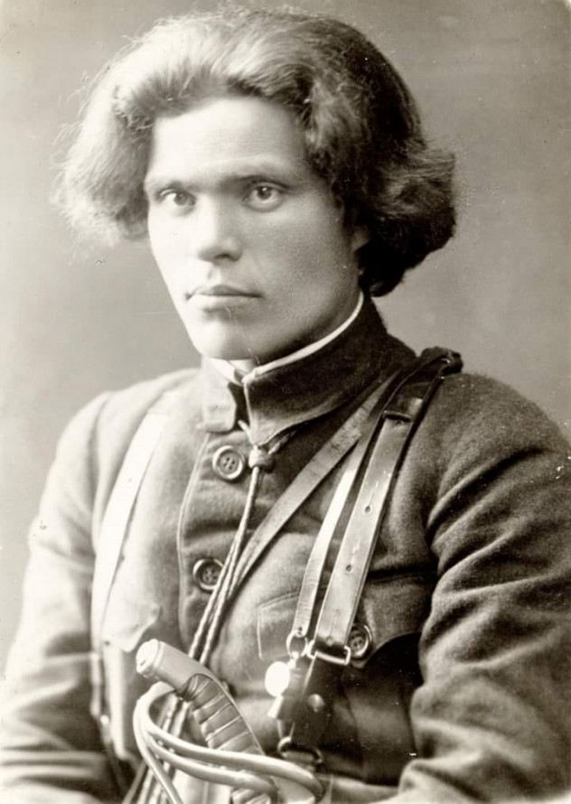

Makhno a eu deux vies : celle d'un chef de guérilla que les armées de toute l'Ukraine redoutaient, et celle d'un exilé tuberculeux qui travaillait en usine à Paris. Mamie a un faible pour la seconde aussi : il n'a jamais renié ses idées, même seul et pauvre.

Sa vie
- Il naît en 1888 à Houliaïpole, dans le sud de l'Ukraine. Enfant, il garde les troupeaux des riches.
- Anarchiste à dix-huit ans, il est condamné aux travaux forcés à perpétuité en 1910. Il passe sept ans à la prison de la Boutyrka, à Moscou.
- Libéré par la révolution de 1917, il rentre chez lui et aide les paysans à reprendre la terre. Pendant quatre ans, il anime l'armée insurrectionnelle qui combat les Allemands, les Blancs, les nationalistes, et finalement l'Armée rouge.
- 1921 : vaincu par les bolcheviks, il fuit en Roumanie, puis en Pologne, où il est emprisonné, et arrive à Paris en 1925.
- Il y travaille comme ouvrier, malade et pauvre, écrit ses mémoires et participe aux débats anarchistes. Il meurt de la tuberculose en 1934. Ses cendres reposent au cimetière du Père-Lachaise.
Ce qu'il défend
- La terre à celles et ceux qui la travaillent, sans attendre la permission d'un gouvernement.
- Les soviets libres : des congrès de paysans et d'ouvriers qui décident eux-mêmes, sans parti au-dessus.
- L'organisation des anarchistes : en exil, il défend avec Piotr Archinov la « Plateforme », un projet d'organisation anarchiste plus unie, qui fait encore débat aujourd'hui.
Ce qu'on en discute
La propagande soviétique a accusé les makhnovistes de pogroms antisémites. Les historiens ont montré que Makhno les a combattus, qu'il a fait fusiller des responsables de pogroms et que des Juifs ont occupé des postes importants dans son mouvement. Mais c'était une guerre civile atroce, et ses troupes n'ont pas été sans violences. Le dossier complet en parle.
Sur le site
- Le dossier en trois parties : Makhno et la Makhnovtchina, Soviets libres, congrès et armée insurrectionnelle et La critique libertaire des bolcheviks.
Sources et pour aller plus loin
Lire
- Histoire du mouvement makhnoviste, Piotr Archinov, 1923.Le récit d'un compagnon de Makhno.
- Nestor Makhno, le cosaque libertaire, Alexandre Skirda, 1982.La grande biographie en français.
Sur le web
- Nestor Makhno sur WikipédiaRepères biographiques.
Portrait écrit par la bande à Mamie. Photo d'époque issue de Wikimedia Commons. Libre de reproduction.
À lire aussi · Révolutionnaires
- Buenaventura Durruti, un monde nouveau dans nos cœursMécanicien de León, militant de la CNT, exilé, puis chef de la colonne qui porte son nom sur le front d'Aragon : la figure la plus célèbre de la révolution espagnole.
- Saïl Mohamed, anarchiste et anticolonialisteOuvrier kabyle installé en France, il fait vivre l'anarchisme chez les travailleurs algériens, combat le centenaire de la colonisation et part se battre en Espagne.